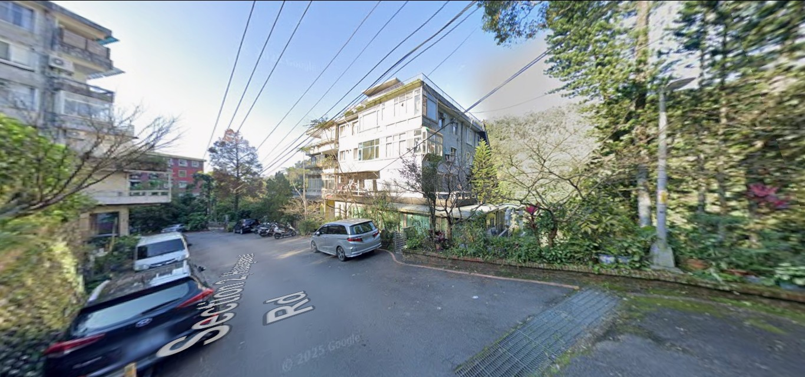
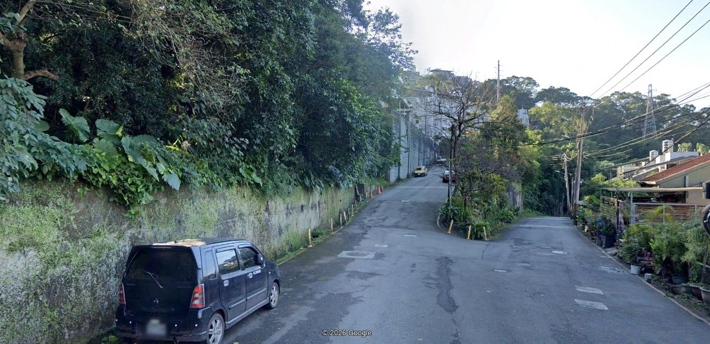
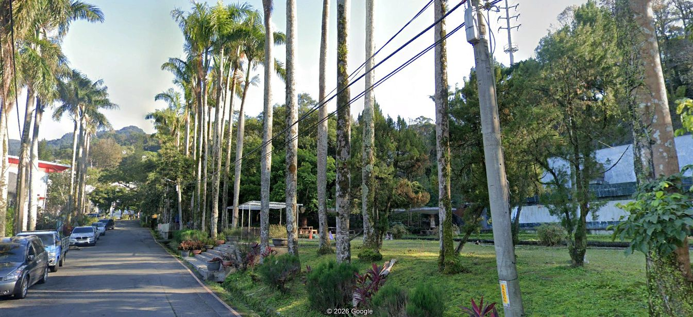
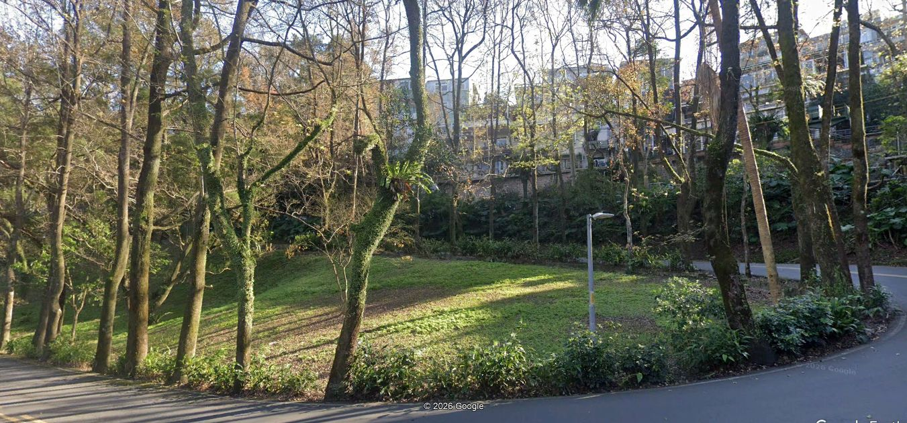
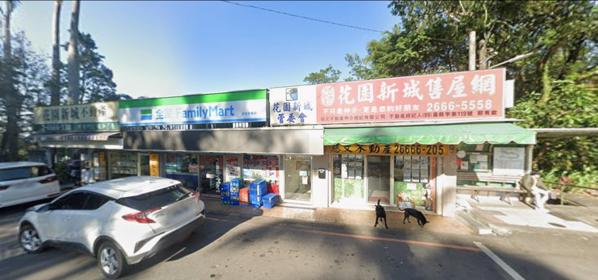
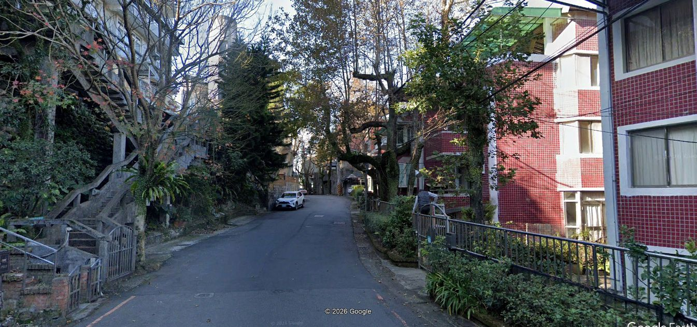
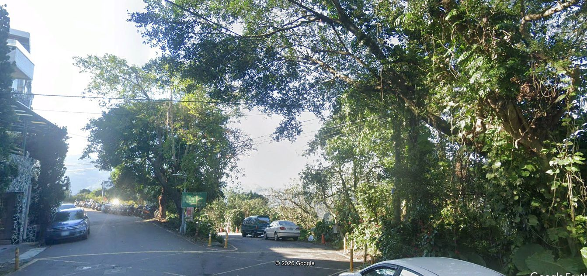
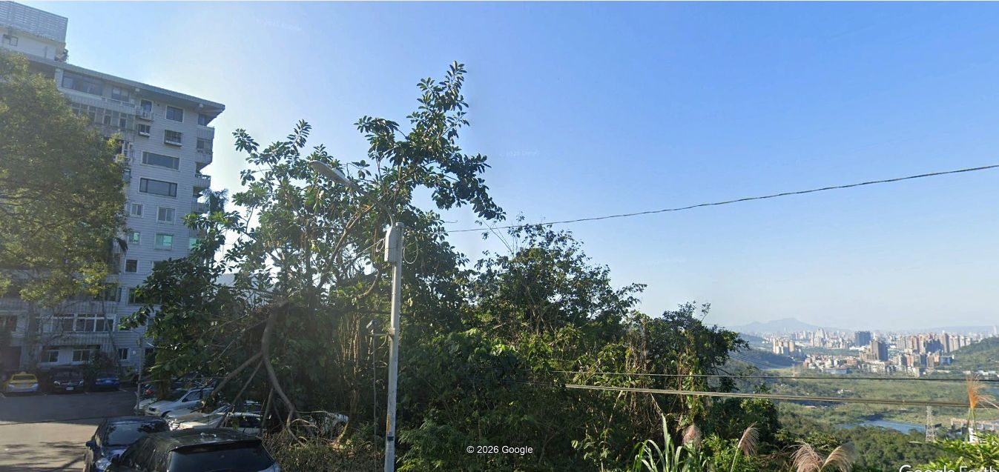

Biking 1a
This is a short biking route that takes about 35 minutes. I am going to show some of the places that this route takes me as I bike.The route starts at the intersection right by our house .

homeViewAfter a fast down, we get to a bit of a steep climb up

downViewAt the top of this climb we get to the park

parkViewAfter going past the park we go around the back of tha park to get a ight turn and continue up to an important area

lower turnViewThis is a central area of the community, I will call it the Circle because it has a circular road that cars, trucks and busses have to drive around. It is part of the bus stop area and a place to buy items, and pay community dues.

CircleViewOn this bike route, i pass by this area several times.
I head west on a road with lots of narrow 3 floor private homes

narrowViewAt the end of the road, take the right path - the left path goes to the church

rightViewGoing down the tight path takes you to the western end of the community and a large building - where you turn around and head back towards the circle

west sideViewcontinue the ride by clicking the menu - Biking 1b